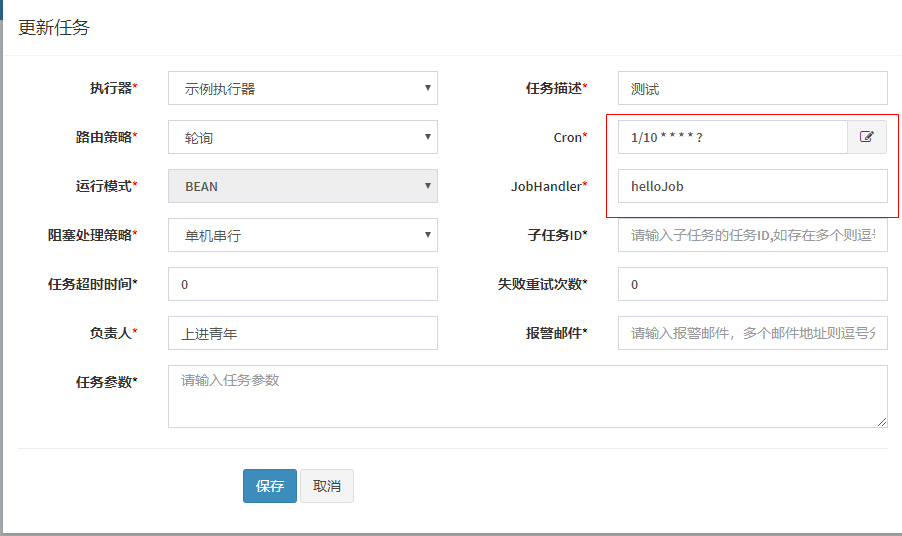
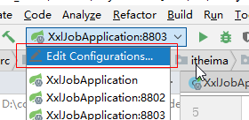
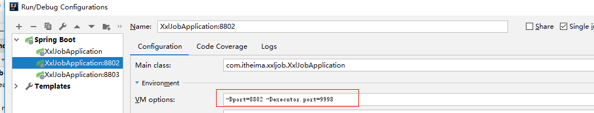

01-今日学习目标 01:06¶
- 能够理解什么是分布式任务调度
- 能够掌握xxl-job的基本使用
- 能够使用xxl-job解决黑马头条项目中定时任务的功能
- 能够完成自媒体文章人工审核功能
- 能够完成自媒体端文章上下架同步的问题
02-什么是任务调度 06:34¶
我们可以先思考一下业务场景的解决方案：
- 某电商系统需要在每天上午10点，下午3点，晚上8点发放一批优惠券。
- 某银行系统需要在信用卡到期还款日的前三天进行短信提醒。
- 某财务系统需要在每天凌晨0:10结算前一天的财务数据，统计汇总。
- 12306会根据车次的不同，设置某几个时间点进行分批放票。
以上业务场景的解决方案就是任务调度。
任务调度是指系统为了自动完成特定任务，在约定的特定时刻去执行任务的过程。有了任务调度即可解放更多的人力，而是由系统自动去执行任务。
如何实现任务调度？
- 多线程方式，结合sleep
- JDK提供的API，例如：Timer、ScheduledExecutor
- 框架，例如Quartz ，它是一个功能强大的任务调度框架，可以满足更多更复杂的调度需求
- spring task
入门案例
spring框架中默认就支持了一个任务调度，spring-task
（1）创建一个工程：spring-task-demo
pom文件
<!-- 继承Spring boot工程 -->
<parent>
<groupId>org.springframework.boot</groupId>
<artifactId>spring-boot-starter-parent</artifactId>
<version>2.1.5.RELEASE</version>
</parent>
<dependencies>
<dependency>
<groupId>org.springframework.boot</groupId>
<artifactId>spring-boot-starter-web</artifactId>
</dependency>
</dependencies>
（2）引导类：
package com.itheima.task;
import org.springframework.boot.SpringApplication;
import org.springframework.boot.autoconfigure.SpringBootApplication;
import org.springframework.scheduling.annotation.EnableScheduling;
@SpringBootApplication
@EnableScheduling
public class TaskApplication {
public static void main(String[] args) {
SpringApplication.run(TaskApplication.class,args);
}
}
(3)编写案例
package com.itheima.task.job;
import org.springframework.scheduling.annotation.Scheduled;
import org.springframework.stereotype.Component;
import java.util.Date;
@Component
public class HelloJob {
@Scheduled(cron = "0/5 * * * * ?")
public void eat(){
System.out.println("5秒中吃一次饭，我想成为一个胖子"+new Date());
}
}
测试：启动项目，每隔5秒中会执行一次eat方法
03-cron表达式 08:03¶
0 0 14 ？ 5 1#2 *
秒 分 时 天 月 星期 年
cron表达式是一个字符串, 用来设置定时规则, 由七部分组成, 每部分中间用空格隔开, 每部分的含义如下表所示:
| 组成部分 | 含义 | 取值范围 |
|---|---|---|
| 第一部分 | Seconds (秒) | 0－59 |
| 第二部分 | Minutes(分) | 0－59 |
| 第三部分 | Hours(时) | 0-23 |
| 第四部分 | Day-of-Month(天) | 1-31 |
| 第五部分 | Month(月) | 0-11或JAN-DEC |
| 第六部分 | Day-of-Week(星期) | 1-7(1表示星期日)或SUN-SAT |
| 第七部分 | Year(年) 可选 | 1970-2099 |
另外, cron表达式还可以包含一些特殊符号来设置更加灵活的定时规则, 如下表所示:
| 符号 | 含义 |
|---|---|
| ? | 表示不确定的值。当两个子表达式其中一个被指定了值以后，为了避免冲突，需要将另外一个的值设为“?”。例如：想在每月20日触发调度，不管20号是星期几，只能用如下写法：0 0 0 20 * ?，其中最后以为只能用“?” |
| * | 代表所有可能的值 |
| , | 设置多个值,例如”26,29,33”表示在26分,29分和33分各自运行一次任务 |
| - | 设置取值范围,例如”5-20”，表示从5分到20分钟每分钟运行一次任务 |
| / | 设置频率或间隔,如"1/15"表示从1分开始,每隔15分钟运行一次任务 |
| L | 用于每月，或每周，表示每月的最后一天，或每个月的最后星期几,例如"6L"表示"每月的最后一个星期五" |
| W | 表示离给定日期最近的工作日,例如"15W"放在每月（day-of-month）上表示"离本月15日最近的工作日" |
| # | 表示该月第几个周X。例如”6#3”表示该月第3个周五 |
为了让大家更熟悉cron表达式的用法, 接下来我们给大家列举了一些例子, 如下表所示:
| cron表达式 | 含义 |
|---|---|
| /5 * * * ? | 每隔5秒运行一次任务 |
| 0 0 23 * * ? | 每天23点运行一次任务 |
| 0 0 1 1 * ? | 每月1号凌晨1点运行一次任务 |
| 0 0 23 L * ? | 每月最后一天23点运行一次任务 |
| 0 26,29,33 * * * ? | 在26分、29分、33分运行一次任务 |
| 0 0/30 9-17 * * ? | 朝九晚五工作时间内每半小时运行一次任务 |
| 0 15 10 ? * 6#3 | 每月的第三个星期五上午10:15运行一次任务 |
0 0 21 ？ 5 1#2 *
秒 分 时 日 月 周 年
0/30
04-什么是分布式任务调度 04:11¶
当前软件的架构已经开始向分布式架构转变，将单体结构拆分为若干服务，服务之间通过网络交互来完成业务处理。在分布式架构下，一个服务往往会部署多个实例来运行我们的业务，如果在这种分布式系统环境下运行任务调度，我们称之为分布式任务调度。

将任务调度程序分布式构建，这样就可以具有分布式系统的特点，并且提高任务的调度处理能力：
1、并行任务调度
并行任务调度实现靠多线程，如果有大量任务需要调度，此时光靠多线程就会有瓶颈了，因为一台计算机CPU的处理能力是有限的。
如果将任务调度程序分布式部署，每个结点还可以部署为集群，这样就可以让多台计算机共同去完成任务调度，我们可以将任务分割为若干个分片，由不同的实例并行执行，来提高任务调度的处理效率。
2、高可用
若某一个实例宕机，不影响其他实例来执行任务。
3、弹性扩容
当集群中增加实例就可以提高并执行任务的处理效率。
4、任务管理与监测
对系统中存在的所有定时任务进行统一的管理及监测。让开发人员及运维人员能够时刻了解任务执行情况，从而做出快速的应急处理响应。
分布式任务调度面临的问题：
当任务调度以集群方式部署，同一个任务调度可能会执行多次，例如：电商系统定期发放优惠券，就可能重复发放优惠券，对公司造成损失，信用卡还款提醒就会重复执行多次，给用户造成烦恼，所以我们需要控制相同的任务在多个运行实例上只执行一次。常见解决方案：
- 分布式锁，多个实例在任务执行前首先需要获取锁，如果获取失败那么就证明有其他服务已经在运行，如果获取成功那么证明没有服务在运行定时任务，那么就可以执行。
- ZooKeeper选举，利用ZooKeeper对Leader实例执行定时任务，执行定时任务的时候判断自己是否是Leader，如果不是则不执行，如果是则执行业务逻辑，这样也能达到目的。
05-XXL-Job简介 04:54¶
针对分布式任务调度的需求，市场上出现了很多的产品：
1） TBSchedule：淘宝推出的一款非常优秀的高性能分布式调度框架，目前被应用于阿里、京东、支付宝、国美等很多互联网企业的流程调度系统中。但是已经多年未更新，文档缺失严重，缺少维护。
2） XXL-Job：大众点评的分布式任务调度平台，是一个轻量级分布式任务调度平台, 其核心设计目标是开发迅速、学习简单、轻量级、易扩展。现已开放源代码并接入多家公司线上产品线，开箱即用。
3）Elastic-job：当当网借鉴TBSchedule并基于quartz 二次开发的弹性分布式任务调度系统，功能丰富强大，采用zookeeper实现分布式协调，具有任务高可用以及分片功能。
4）Saturn： 唯品会开源的一个分布式任务调度平台，基于Elastic-job，可以全域统一配置，统一监 控，具有任务高可用以及分片功能。
XXL-JOB是一个分布式任务调度平台，其核心设计目标是开发迅速、学习简单、轻量级、易扩展。现已开放源代码并接入多家公司线上产品线，开箱即用。
源码地址：https://gitee.com/xuxueli0323/xxl-job
文档地址：https://www.xuxueli.com/xxl-job/
特性
- 简单灵活 提供Web页面对任务进行管理，管理系统支持用户管理、权限控制； 支持容器部署； 支持通过通用HTTP提供跨平台任务调度；
- 丰富的任务管理功能 支持页面对任务CRUD操作； 支持在页面编写脚本任务、命令行任务、Java代码任务并执行； 支持任务级联编排，父任务执行结束后触发子任务执行； 支 持设置指定任务执行节点路由策略，包括轮询、随机、广播、故障转移、忙碌转移等； 支持Cron方式、任务依赖、调度中心API接口方式触发任务执行
- 高性能 任务调度流程全异步化设计实现，如异步调度、异步运行、异步回调等，有效对密集调度进行流量削峰；
- 高可用 任务调度中心、任务执行节点均 集群部署，支持动态扩展、故障转移 支持任务配置路由故障转移策略，执行器节点不可用是自动转移到其他节点执行 支持任务超时控制、失败重试配置 支持任务处理阻塞策略：调度当任务执行节点忙碌时来不及执行任务的处理策略，包括：串行、抛弃、覆盖策略
- 易于监控运维 支持设置任务失败邮件告警，预留接口支持短信、钉钉告警； 支持实时查看任务执行运行数据统计图表、任务进度监控数据、任务完整执行日志；
06-入门案例环境搭建 10:42¶
在分布式架构下，通过XXL-Job实现定时任务

调度中心：负责管理调度信息，按照调度配置发出调度请求，自身不承担业务代码。
任务执行器：负责接收调度请求并执行任务逻辑。
任务：专注于任务的处理。
调度中心会发出调度请求，任务执行器接收到请求之后会去执行任务，任务则专注于任务业务的处理。
目前官方已经更新版本为2.2.0不再是snapshot，我已经将版本更新
1.在SQLyog中执行xxl-job资料中的tables_xxl_job.sql
2.编辑资料中的application.properties，修改mysql路径和用户名密码
3.使用cmd,cd到jar包所在目录，执行
java -jar xxl-job-admin-2.2.0.jar
或者
xxljob.bat
访问http://localhost:10086/xxl-job-admin即可
默认登录账号：admin/123456
09-创建执行器和任务 07:29¶
配置执行器¶
在任务调度中心，点击进入"执行器管理"界面, 如下图:

1、此处的AppName,会在创建任务时被选择，每个任务必然要选择一个执行器。 2、"执行器列表" 中显示在线的执行器列表, 支持编辑删除。
以下是执行器的属性说明：
| 属性名称 | 说明 |
|---|---|
| AppName | 是每个执行器集群的唯一标示AppName, 执行器会周期性以AppName为对象进行自动注册。可通过该配置自动发现注册成功的执行器, 供任务调度时使用; |
| 名称 | 执行器的名称, 因为AppName限制字母数字等组成,可读性不强, 名称为了提高执行器的可读性; |
| 排序 | 执行器的排序, 系统中需要执行器的地方,如任务新增, 将会按照该排序读取可用的执行器列表; |
| 注册方式 | 调度中心获取执行器地址的方式； |
| 机器地址 | 注册方式为"手动录入"时有效，支持人工维护执行器的地址信息； |
具体操作：
（1）新增执行器：

（2）自动注册和手动注册的区别和配置

在调度中心新建任务¶
在任务管理->新建，填写以下内容

-
执行器：任务的绑定的执行器，任务触发调度时将会自动发现注册成功的执行器, 实现任务自动发现功能; 另一方面也可以方便的进行任务分组。每个任务必须绑定一个执行器, 可在 "执行器管理" 进行设置
-
任务描述：任务的描述信息，便于任务管理
路由策略：当执行器集群部署时，提供丰富的路由策略，包括
-
FIRST（第一个）：固定选择第一个机器；
-
LAST（最后一个）：固定选择最后一个机器；
-
ROUND（轮询）：
-
RANDOM（随机）：随机选择在线的机器；
-
CONSISTENT_HASH（一致性HASH）：每个任务按照Hash算法固定选择某一台机器，且所有任务均匀散列在不同机器上。
-
LEAST_FREQUENTLY_USED（最不经常使用）：使用频率最低的机器优先被选举；
-
LEAST_RECENTLY_USED（最近最久未使用）：最久为使用的机器优先被选举；
-
FAILOVER（故障转移）：按照顺序依次进行心跳检测，第一个心跳检测成功的机器选定为目标执行器并发起调度；
-
BUSYOVER（忙碌转移）：按照顺序依次进行空闲检测，第一个空闲检测成功的机器选定为目标执行器并发起调度；
-
SHARDING_BROADCAST(分片广播)：广播触发对应集群中所有机器执行一次任务，同时系统自动传递分片参数；可根据分片参数开发分片任务；
-
Cron：触发任务执行的Cron表达式；
-
运行模式：
-
BEAN模式：任务以JobHandler方式维护在执行器端；需要结合 "JobHandler" 属性匹配执行器中任务；
-
GLUE模式(Java)：任务以源码方式维护在调度中心；该模式的任务实际上是一段继承自IJobHandler的Java类代码并 "groovy" 源码方式维护，它在执行器项目中运行，可使用@Resource/@Autowire注入执行器里中的其他服务；
-
GLUE模式(Shell)：任务以源码方式维护在调度中心；该模式的任务实际上是一段 "shell" 脚本；
-
GLUE模式(Python)：任务以源码方式维护在调度中心；该模式的任务实际上是一段 "python" 脚本；
-
GLUE模式(PHP)：任务以源码方式维护在调度中心；该模式的任务实际上是一段 "php" 脚本；
-
GLUE模式(NodeJS)：任务以源码方式维护在调度中心；该模式的任务实际上是一段 "nodejs" 脚本；
-
GLUE模式(PowerShell)：任务以源码方式维护在调度中心；该模式的任务实际上是一段 "PowerShell" 脚本；
-
JobHandler：运行模式为 "BEAN模式" 时生效，对应执行器中新开发的JobHandler类“@JobHandler”注解自定义的value值；
-
阻塞处理策略：调度过于密集执行器来不及处理时的处理策略；
-
单机串行（默认）：调度请求进入单机执行器后，调度请求进入FIFO队列并以串行方式运行；
-
丢弃后续调度：调度请求进入单机执行器后，发现执行器存在运行的调度任务，本次请求将会被丢弃并标记为失败；
-
覆盖之前调度：调度请求进入单机执行器后，发现执行器存在运行的调度任务，将会终止运行中的调度任务并清空队列，然后运行本地调度任务；
-
子任务：每个任务都拥有一个唯一的任务ID(任务ID可以从任务列表获取)，当本任务执行结束并且执行成功时，将会触发子任务ID所对应的任务的一次主动调度。
-
任务超时时间：支持自定义任务超时时间，任务运行超时将会主动中断任务；
-
失败重试次数；支持自定义任务失败重试次数，当任务失败时将会按照预设的失败重试次数主动进行重试；
-
报警邮件：任务调度失败时邮件通知的邮箱地址，支持配置多邮箱地址，配置多个邮箱地址时用逗号分隔；
-
负责人：任务的负责人；
-
执行参数：任务执行所需的参数；
10-与Spring Boot集成 10:18¶
新建项目：xxl-job-demo
（1）pom文件
<groupId>com.itheima</groupId>
<artifactId>xxl-job-demo</artifactId>
<version>1.0-SNAPSHOT</version>
<!-- 继承Spring boot工程 -->
<parent>
<groupId>org.springframework.boot</groupId>
<artifactId>spring-boot-starter-parent</artifactId>
<version>2.1.5.RELEASE</version>
</parent>
<dependencies>
<dependency>
<groupId>org.springframework.boot</groupId>
<artifactId>spring-boot-starter-web</artifactId>
</dependency>
<!-- xxl-job -->
<dependency>
<groupId>com.xuxueli</groupId>
<artifactId>xxl-job-core</artifactId>
<version>2.2.0</version>
</dependency>
</dependencies>
<build>
<plugins>
<plugin>
<groupId>org.springframework.boot</groupId>
<artifactId>spring-boot-maven-plugin</artifactId>
</plugin>
</plugins>
</build>
2.2.0-snapshot版本已经不存在，改成2.2.0版本
(2)配置有两个，一个是application.properties，另外一个是日志配置:logback.xml
application.properties
# web port
server.port=${port:8801}
# no web
#spring.main.web-environment=false
# log config
logging.config=classpath:logback.xml
### xxl-job admin address list, such as "http://address" or "http://address01,http://address02"
xxl.job.admin.addresses=http://localhost:8888/xxl-job-admin
### xxl-job, access token
xxl.job.accessToken=
### xxl-job executor appname
xxl.job.executor.appname=xxl-job-executor-sample
### xxl-job executor registry-address: default use address to registry , otherwise use ip:port if address is null
xxl.job.executor.address=
### xxl-job executor server-info
xxl.job.executor.ip=
xxl.job.executor.port=${executor.port:9999}
### xxl-job executor log-path
xxl.job.executor.logpath=/data/applogs/xxl-job/jobhandler
### xxl-job executor log-retention-days
xxl.job.executor.logretentiondays=30
logback.xml
<?xml version="1.0" encoding="UTF-8"?>
<configuration debug="false" scan="true" scanPeriod="1 seconds">
<contextName>logback</contextName>
<property name="log.path" value="/data/applogs/xxl-job/xxl-job-executor-sample-springboot.log"/>
<appender name="console" class="ch.qos.logback.core.ConsoleAppender">
<encoder>
<pattern>%d{HH:mm:ss.SSS} %contextName [%thread] %-5level %logger{36} - %msg%n</pattern>
</encoder>
</appender>
<appender name="file" class="ch.qos.logback.core.rolling.RollingFileAppender">
<file>${log.path}</file>
<rollingPolicy class="ch.qos.logback.core.rolling.TimeBasedRollingPolicy">
<fileNamePattern>${log.path}.%d{yyyy-MM-dd}.zip</fileNamePattern>
</rollingPolicy>
<encoder>
<pattern>%date %level [%thread] %logger{36} [%file : %line] %msg%n
</pattern>
</encoder>
</appender>
<root level="info">
<appender-ref ref="console"/>
<appender-ref ref="file"/>
</root>
</configuration>
(3)引导类：
package com.itheima.xxljob;
import org.springframework.boot.SpringApplication;
import org.springframework.boot.autoconfigure.SpringBootApplication;
@SpringBootApplication
public class XxlJobApplication {
public static void main(String[] args) {
SpringApplication.run(XxlJobApplication.class,args);
}
}
2.2.4 添加xxl-job配置¶
添加配置类：
这个类主要是创建了任务执行器，参考官方案例编写，无须改动
package com.itheima.xxljob.config;
import com.xxl.job.core.executor.impl.XxlJobSpringExecutor;
import org.slf4j.Logger;
import org.slf4j.LoggerFactory;
import org.springframework.beans.factory.annotation.Value;
import org.springframework.context.annotation.Bean;
import org.springframework.context.annotation.Configuration;
/**
* xxl-job config
*
* @author xuxueli 2017-04-28
*/
@Configuration
public class XxlJobConfig {
private Logger logger = LoggerFactory.getLogger(XxlJobConfig.class);
@Value("${xxl.job.admin.addresses}")
private String adminAddresses;
@Value("${xxl.job.accessToken}")
private String accessToken;
@Value("${xxl.job.executor.appname}")
private String appName;
@Value("${xxl.job.executor.address}")
private String address;
@Value("${xxl.job.executor.ip}")
private String ip;
@Value("${xxl.job.executor.port}")
private int port;
@Value("${xxl.job.executor.logpath}")
private String logPath;
@Value("${xxl.job.executor.logretentiondays}")
private int logRetentionDays;
@Bean
public XxlJobSpringExecutor xxlJobExecutor() {
logger.info(">>>>>>>>>>> xxl-job config init.");
XxlJobSpringExecutor xxlJobSpringExecutor = new XxlJobSpringExecutor();
xxlJobSpringExecutor.setAdminAddresses(adminAddresses);
xxlJobSpringExecutor.setAppname(appName);
xxlJobSpringExecutor.setAddress(address);
xxlJobSpringExecutor.setIp(ip);
xxlJobSpringExecutor.setPort(port);
xxlJobSpringExecutor.setAccessToken(accessToken);
xxlJobSpringExecutor.setLogPath(logPath);
xxlJobSpringExecutor.setLogRetentionDays(logRetentionDays);
return xxlJobSpringExecutor;
}
/**
* 针对多网卡、容器内部署等情况，可借助 "spring-cloud-commons" 提供的 "InetUtils" 组件灵活定制注册IP；
*
* 1、引入依赖：
* <dependency>
* <groupId>org.springframework.cloud</groupId>
* <artifactId>spring-cloud-commons</artifactId>
* <version>${version}</version>
* </dependency>
*
* 2、配置文件，或者容器启动变量
* spring.cloud.inetutils.preferred-networks: 'xxx.xxx.xxx.'
*
* 3、获取IP
* String ip_ = inetUtils.findFirstNonLoopbackHostInfo().getIpAddress();
*/
}
2.2.5 创建任务¶
package com.itheima.xxljob.job;
import com.xxl.job.core.biz.model.ReturnT;
import com.xxl.job.core.handler.annotation.XxlJob;
import org.springframework.beans.factory.annotation.Value;
import org.springframework.stereotype.Component;
import java.time.LocalDateTime;
@Component
public class HelloJob {
@Value("${server.port}")
private String appPort;
@XxlJob("helloJob")
public ReturnT<String> hello(String param) throws Exception {
System.out.println("helloJob："+ LocalDateTime.now()+",端口号"+appPort);
return ReturnT.SUCCESS;
}
}
@XxlJob("helloJob")这个一定要与调度中心新建任务的JobHandler的值保持一致,如下图：

11-测试 07:15¶
（1）首先启动调度中心
（2）启动xxl-job-demo项目，为了展示更好的效果，可以同时启动三个项目，用同一个JobHandler，查看处理方式。
在启动多个项目的时候，端口需要切换，连接xxl-job的执行器端口不同相同
服务一：默认启动8801端口，执行器端口为9999
idea中不用其他配置，直接启动项目即可
服务二：项目端口：8802，执行器端口：9998
idea配置如下：
- 编辑配置，Edit Configurations...

- 选中XxlJobApplication，点击复制

- 修改参数

- 启动：选中8802启动项目

服务三：项目端口：8803，执行器端口：9997

（3）测试效果
三个项目启动后，可以查看到是轮询的方式分别去执行当前调度任务。
12-定时扫描待发布文章-数据准备 10:18¶
- 前期回顾：在自媒体文章审核的时候，审核通过后，判断了文章的发布时间大于当前时间，这个时候并没有真正的发布文章，而是把文章的状态设置为了8（审核通过待发布）
- 定时任务的作用就是每分钟去扫描这些待发布的文章，如果当前文章的状态为8，并且发布时间小于当前时间的，立刻发布当前文章
自动审核的代码都是通过自媒体文章的id进行审核的，这个时候需要在admin端远程调用自媒体端查询文章状态为8且发布时间小于当前时间的文章id列表
（1）修改WmNewsControllerApi接口，新增方法
/**
* 查询需要发布的文章id列表
* @return
*/
List<Integer> findRelease();
(2)业务层
在自媒体微服务中的WmNewsService新增方法
/**
* 查询需要发布的文章id列表
* @return
*/
List<Integer> findRelease();
实现方法：
/**
* 查询需要发布的文章id列表
* @return
*/
@Override
public List<Integer> findRelease(){
List<WmNews> list = list(Wrappers.<WmNews>lambdaQuery().eq(WmNews::getStatus, 8).lt(WmNews::getPublishTime,new Date()));
List<Integer> resultList = list.stream().map(WmNews::getId).collect(Collectors.toList());
return resultList;
}
(3)控制器
WmNewsController中新增方法
@GetMapping("/findRelease")
@Override
public List<Integer> findRelease() {
return wmNewsService.findRelease();
}
（4）在admin端添加远程调用feign接口
修改WemediaFeign接口添加方法
@GetMapping("/api/v1/news/findRelease")
List<Integer> findRelease();
13-创建任务 12:44¶
讲义中的setAppName修改为setAppname
14-测试 03:39¶
cron表达式编写有误
0 0/1 * * * ?
从0分开始，每隔1分钟执行一次
15-人工审核文章 需求说明 03:34¶
平台管理员可以查看待人工审核的文章信息，可以通过（状态改为4）或驳回（状态改为2）
也可以通过点击查看按钮，查看文章详细信息，查看详情后可以根据内容判断是否需要通过审核
16-接口定义及mapper 13:51¶
1 需要分页查询自媒体文章信息，可以根据标题模糊查询
2 需要根据文章id查看文章的详情
3 修改文章的状态，已实现
17-业务层实现及测试 12:24¶
@Autowired
private WmNewsMapper wmNewsMapper;
public PageResponseResult findListAndPage(NewsAuthDto dto){
//1.检查参数
dto.checkParam();
//设置起始页
dto.setPage((dto.getPage()-1)*dto.getSize());
//dto.setTitle("%"+dto.getTitle()+"%");
//需要判断是否为空,在SQL中使用concat拼接也可以 null -> "%null%"
if(StringUtils.isNotBlank(dto.getTitle())){
dto.setTitle("%"+dto.getTitle()+"%");
}
//2.分页查询
List<WmNews> list = wmNewsMapper.findListAndPage(dto);
//统计多少条数据
int count = wmNewsMapper.findListCount(dto);
//3.结果返回
PageResponseResult responseResult = new PageResponseResult(dto.getPage(),dto.getSize(),count);
responseResult.setData(list);
return responseResult;
}
@Autowired
private WmUserMapper wmUserMapper;
@Override
public WmNewsVo findWmNewsVo(Integer id) {
//1.查询文章信息
WmNews wmNews = getById(id);
//2.查询作者
WmUser wmUser = null;
if(wmNews!=null && wmNews.getUserId() != null){
wmUser = wmUserMapper.selectById(wmNews.getUserId());
}
//3.封装vo信息返回
WmNewsVo wmNewsVo = new WmNewsVo();
BeanUtils.copyProperties(wmNews,wmNewsVo);
if(wmUser != null){
wmNewsVo.setAuthorName(wmUser.getName());
}
return wmNewsVo;
}
扩展：mybatis-plus使用mapper映射文件如何实现更优雅的分页？¶
@Override
public PageResponseResult findList(NewsAuthDto dto) {
//1.检查分页参数
dto.checkParam();
//2.设置分页条件
dto.setPage((dto.getPage()-1)*dto.getSize());
if(StringUtils.isNotBlank(dto.getTitle())){
dto.setTitle("%"+dto.getTitle()+"%");
}
//3.分页查询
//List<WmNewsVo> list = wmNewsMapper.findListAndPage(dto);
IPage<WmNewsVo> wmNewsVoIPage =
wmNewsMapper.selectPageVo(new Page<>(dto.getPage(), dto.getSize()), dto);
//统计数据
//int count = wmNewsMapper.findListCount(dto);
//4.结果返回
PageResponseResult pageResponseResult = new PageResponseResult(dto.getPage(),dto.getSize()
,Integer.parseInt(String.valueOf(wmNewsVoIPage.getTotal())));
pageResponseResult.setData(wmNewsVoIPage.getRecords());
return pageResponseResult;
}
mapper:
/**
* <p>
* 查询 : 根据state状态查询用户列表，分页显示
* </p>
*
* @param page 分页对象,xml中可以从里面进行取值,传递参数 Page 即自动分页,必须放在第一位(你可以继承Page实现自己的分页对象)
* @return 分页对象
*/
public IPage<WmNewsVo> selectPageVo(Page<?> page, @Param("dto") NewsAuthDto dto);
<select id="selectPageVo" parameterType="com.heima.model.admin.dtos.NewsAuthDto" resultType="com.heima.model.wemedia.vo.WmNewsVo">
SELECT
wn.*, wu.`name` authorName
FROM
wm_news wn
LEFT JOIN wm_user wu ON wn.user_id = wu.id
<where>
<if test="dto.title != null and dto.title != ''">
and wn.title like #{dto.title}
</if>
</where>
</select>
18-admin接口定义 04:25¶
1 需要分页查询自媒体文章信息，可以根据标题模糊查询
2 当审核通过后，修改文章状态为4
3 当审核驳回后，修改文章状态为2(讲义中为3，错误)，并且需要说明原因
4 需要根据文章id查看文章的详情
package com.heima.apis.admin;
import com.heima.model.admin.dtos.NewsAuthDto;
import com.heima.model.common.dtos.ResponseResult;
public interface NewsAuthControllerApi {
/**
* 查询自媒体文章列表
* @param dto
* @return
*/
public ResponseResult findNews(NewsAuthDto dto);
/**
* 查询文章详情
* @param id
* @return
*/
public ResponseResult findOne(Integer id);
/**
* 文章审核成功
* @param dto
* @return
*/
public ResponseResult authPass(NewsAuthDto dto);
/**
* 文章审核失败
* @param dto
* @return
*/
public ResponseResult authFail(NewsAuthDto dto);
}
19-admin业务实现 13:05¶
@Override
public PageResponseResult findNews(NewsAuthDto dto) {
//分页查询
PageResponseResult responseResult = wemediaFeign.findList(dto);
//返回的数据中有图片需要显示，需要回显一个fasfdfs服务器的地址
responseResult.setHost(fileServerUrl);
return responseResult;
}
@Override
public ResponseResult findOne(Integer id) {
//1.参数检查
if(id == null){
return ResponseResult.errorResult(AppHttpCodeEnum.PARAM_INVALID);
}
//2.查询数据
WmNewsVo wmNewsVo = wemediaFeign.findWmNewsVo(id);
//3.结果封装
ResponseResult responseResult = ResponseResult.okResult(wmNewsVo);
responseResult.setHost(fileServerUrl);
return responseResult;
}
@Override
public ResponseResult updateStatus(NewsAuthDto dto, Integer type) {
//1.参数检查
if(dto == null || dto.getId() == null){
return ResponseResult.errorResult(AppHttpCodeEnum.PARAM_INVALID);
}
//2.查询文章信息
WmNews wmNews = wemediaFeign.findById(dto.getId());
if(wmNews == null){
return ResponseResult.errorResult(AppHttpCodeEnum.DATA_NOT_EXIST);
}
//3.审核失败
if(type.equals(0)){
updateWmNews(wmNews,(short)2,dto.getMsg());
}else if (type.equals(1)){
//4.审核成功
updateWmNews(wmNews,(short)4,"人工审核通过");
}
return ResponseResult.okResult(AppHttpCodeEnum.SUCCESS);
}
bug解决：
人工审核之后，无法将文章进行发布
package com.heima.admin.service.impl;
import com.alibaba.fastjson.JSONArray;
import com.heima.admin.feign.ArticleFeign;
import com.heima.admin.feign.WemediaFeign;
import com.heima.admin.mapper.AdChannelMapper;
import com.heima.admin.mapper.AdSensitiveMapper;
import com.heima.admin.service.WemediaNewsAutoScanService;
import com.heima.common.aliyun.GreeTextScan;
import com.heima.common.aliyun.GreenImageScan;
import com.heima.common.fastdfs.FastDFSClient;
import com.heima.model.admin.dtos.NewsAuthDto;
import com.heima.model.admin.pojos.AdChannel;
import com.heima.model.article.pojos.ApArticle;
import com.heima.model.article.pojos.ApArticleConfig;
import com.heima.model.article.pojos.ApArticleContent;
import com.heima.model.article.pojos.ApAuthor;
import com.heima.model.common.dtos.PageResponseResult;
import com.heima.model.common.dtos.ResponseResult;
import com.heima.model.common.enums.AppHttpCodeEnum;
import com.heima.model.wemedia.pojos.WmNews;
import com.heima.model.wemedia.pojos.WmUser;
import com.heima.model.wemedia.vo.WmNewsVo;
import com.heima.utils.common.SensitiveWordUtil;
import io.seata.spring.annotation.GlobalTransactional;
import lombok.extern.log4j.Log4j2;
import org.springframework.beans.factory.annotation.Autowired;
import org.springframework.beans.factory.annotation.Value;
import org.springframework.stereotype.Service;
import java.util.*;
@Service
@Log4j2
public class WemediaNewsAutoScanServiceImpl implements WemediaNewsAutoScanService {
@Autowired
private WemediaFeign wemediaFeign;
@GlobalTransactional
//@Override
public void autoScanByMediaNewsId(Integer id) {
if (id == null) {
log.error("当前的审核id空");
return;
}
//1.根据id查询自媒体文章信息
WmNews wmNews = wemediaFeign.findById(id);
if (wmNews == null) {
log.error("审核的自媒体文章不存在，自媒体的id:{}", id);
return;
}
//2.文章状态为4（人工审核通过）直接保存数据和创建索引
if (wmNews.getStatus() == 4) {
if(wmNews.getPublishTime().getTime() <= System.currentTimeMillis()){
//已经到了发布时间
//保存数据
saveAppArticle(wmNews);
}else{
updateWmNews(wmNews, (short) 8,"");
}
return;
}
//3.文章状态为8 发布时间小于等于当前时间 直接保存数据
if (wmNews.getStatus() == 8 && wmNews.getPublishTime().getTime() <= System.currentTimeMillis()) {
//保存数据
saveAppArticle(wmNews);
return;
}
//4.文章状态为1，待审核
if (wmNews.getStatus() == 1) {
//抽取文章内容中的纯文本和图片
Map<String, Object> contentAndImagesResult = handleTextAndImages(wmNews);
//4.1 文本审核
boolean textScanBoolean = handleTextScan((String) contentAndImagesResult.get("content"), wmNews);
if (!textScanBoolean) return;
//4.2 图片审核
boolean imagesScanBoolean = handleImagesScan((List<String>) contentAndImagesResult.get("images"), wmNews);
if (!imagesScanBoolean) return;
//4.3 自管理的敏感词审核
boolean sensitiveScanBoolean = handleSensitive((String) contentAndImagesResult.get("content"), wmNews);
if (!sensitiveScanBoolean) return;
//4.4 发布时间大于当前时间，
if (wmNews.getPublishTime().getTime() > System.currentTimeMillis()) {
//修改文章状态为8
updateWmNews(wmNews, (short) 8, "审核通过，待发布");
return;
}
//5.审核通过，修改自媒体文章状态为9 保存app端相关文章信息
saveAppArticle(wmNews);
}
}
@Autowired
private AdSensitiveMapper adSensitiveMapper;
/**
* 敏感词审核
*
* @param content
* @param wmNews
* @param wmNews
* @return
*/
private boolean handleSensitive(String content, WmNews wmNews) {
boolean flag = true;
List<String> allSensitive = adSensitiveMapper.findAllSensitive();
//初始化敏感词
SensitiveWordUtil.initMap(allSensitive);
//文章内容自管理敏感词过滤
Map<String, Integer> resultMap = SensitiveWordUtil.matchWords(content);
if (resultMap.size() > 0) {
log.error("敏感词过滤没有通过，包含了敏感词:{}", resultMap);
//找到了敏感词，审核不通过
updateWmNews(wmNews, (short) 2, "文章中包含了敏感词");
flag = false;
}
return flag;
}
@Autowired
private GreenImageScan greenImageScan;
@Autowired
private FastDFSClient fastDFSClient;
@Value("${fdfs.url}")
private String fileServerUrl;
/**
* 审核图片
*
* @param images
* @param wmNews
* @param wmNews
* @return
*/
private boolean handleImagesScan(List<String> images, WmNews wmNews) {
if (images == null) {
return true;
}
boolean flag = true;
List<byte[]> imageList = new ArrayList<>();
try {
for (String image : images) {
String imageName = image.replace(fileServerUrl, "");
int index = imageName.indexOf("/");
String groupName = imageName.substring(0, index);
String imagePath = imageName.substring(index + 1);
byte[] imageByte = fastDFSClient.download(groupName, imagePath);
imageList.add(imageByte);
}
//阿里云图片审核
Map map = greenImageScan.imageScan(imageList);
//审核不通过
if (!map.get("suggestion").equals("pass")) {
//审核失败
if (map.get("suggestion").equals("block")) {
//修改自媒体文章的状态，并告知审核失败原因
updateWmNews(wmNews, (short) 2, "文章中图片有违规");
flag = false;
}
//人工审核
if (map.get("suggestion").equals("review")) {
//修改自媒体文章的状态，并告知审核失败原因
updateWmNews(wmNews, (short) 3, "文章图片有不确定元素");
flag = false;
}
}
} catch (Exception e) {
e.printStackTrace();
flag = false;
}
return flag;
}
@Autowired
private GreeTextScan greeTextScan;
/**
* 文本审核
*
* @param content
* @param wmNews
* @return
*/
private boolean handleTextScan(String content, WmNews wmNews) {
boolean flag = true;
try {
Map map = greeTextScan.greeTextScan(content);
//审核不通过
if (!map.get("suggestion").equals("pass")) {
//审核失败
if (map.get("suggestion").equals("block")) {
//修改自媒体文章的状态，并告知审核失败原因
updateWmNews(wmNews, (short) 2, "文章内容中有敏感词汇");
flag = false;
}
//人工审核
if (map.get("suggestion").equals("review")) {
//修改自媒体文章的状态，并告知审核失败原因
updateWmNews(wmNews, (short) 3, "文章内容中有不确定词汇");
flag = false;
}
}
} catch (Exception e) {
e.printStackTrace();
flag = false;
}
return flag;
}
/**
* 修改自媒体文章
*
* @param wmNews
* @param status
* @param msg
*/
private void updateWmNews(WmNews wmNews, short status, String msg) {
wmNews.setStatus(status);
wmNews.setReason(msg);
wemediaFeign.updateWmNews(wmNews);
}
/**
* 提取文本内容和图片
*
* @param wmNews
* @return
*/
private Map<String, Object> handleTextAndImages(WmNews wmNews) {
//文章的内容
String content = wmNews.getContent();
//存储纯文本内容
StringBuilder sb = new StringBuilder();
//存储图片
List<String> images = new ArrayList<>();
List<Map> contentList = JSONArray.parseArray(content, Map.class);
for (Map map : contentList) {
if (map.get("type").equals("text")) {
sb.append(map.get("value"));
}
if (map.get("type").equals("image")) {
images.add((String) map.get("value"));
}
}
if (wmNews.getImages() != null && wmNews.getType() != 0) {
String[] split = wmNews.getImages().split(",");
images.addAll(Arrays.asList(split));
}
Map<String, Object> resultMap = new HashMap<>();
resultMap.put("content", sb.toString());
resultMap.put("images", images);
return resultMap;
}
@Autowired
ArticleFeign articleFeign;
/**
* 保存app文章相关的数据
*
* @param wmNews
*/
private void saveAppArticle(WmNews wmNews) {
//保存app文章
ApArticle apArticle = saveArticle(wmNews);
//保存app文章配置
saveArticleConfig(apArticle);
//保存app文章内容
saveArticleContent(apArticle, wmNews);
//修改自媒体文章的状态为9
wmNews.setArticleId(apArticle.getId());
updateWmNews(wmNews, (short) 9, "审核通过");
//TODO es索引创建
}
/**
* 创建app端文章内容信息
*
* @param apArticle
* @param wmNews
*/
private void saveArticleContent(ApArticle apArticle, WmNews wmNews) {
ApArticleContent apArticleContent = new ApArticleContent();
apArticleContent.setArticleId(apArticle.getId());
apArticleContent.setContent(wmNews.getContent());
articleFeign.saveArticleContent(apArticleContent);
}
/**
* 创建app端文章配置信息
*
* @param apArticle
*/
private void saveArticleConfig(ApArticle apArticle) {
ApArticleConfig apArticleConfig = new ApArticleConfig();
apArticleConfig.setArticleId(apArticle.getId());
apArticleConfig.setIsForward(true);
apArticleConfig.setIsDelete(false);
apArticleConfig.setIsDown(true);
apArticleConfig.setIsComment(true);
articleFeign.saveArticleConfig(apArticleConfig);
}
@Autowired
AdChannelMapper adChannelMapper;
/**
* 保存文章
*
* @param wmNews
* @return
*/
private ApArticle saveArticle(WmNews wmNews) {
ApArticle apArticle = new ApArticle();
apArticle.setTitle(wmNews.getTitle());
apArticle.setLayout(wmNews.getType());
apArticle.setImages(wmNews.getImages());
apArticle.setCreatedTime(new Date());
//获取作者相关信息
Integer wmUserId = wmNews.getUserId();
WmUser wmUser = wemediaFeign.findWmUserById(wmUserId);
if (wmUser != null) {
String wmUserName = wmUser.getName();
ApAuthor apAuthor = articleFeign.selectAuthorByName(wmUserName);
if (apAuthor != null) {
apArticle.setAuthorId(apAuthor.getId().longValue());
apArticle.setAuthorName(apAuthor.getName());
}
}
//获取频道相关信息
Integer channelId = wmNews.getChannelId();
AdChannel channel = adChannelMapper.selectById(channelId);
if (channel != null) {
apArticle.setChannelId(channel.getId());
apArticle.setChannelName(channel.getName());
}
return articleFeign.saveAparticle(apArticle);
}
@Override
public PageResponseResult findNews(NewsAuthDto dto) {
//分页查询
PageResponseResult responseResult = wemediaFeign.findList(dto);
//返回的数据中有图片需要显示，需要回显一个fasfdfs服务器的地址
responseResult.setHost(fileServerUrl);
return responseResult;
}
@Override
public ResponseResult findOne(Integer id) {
//1.参数检查
if(id == null){
return ResponseResult.errorResult(AppHttpCodeEnum.PARAM_INVALID);
}
//2.查询数据
WmNewsVo wmNewsVo = wemediaFeign.findWmNewsVo(id);
//3.结果封装
ResponseResult responseResult = ResponseResult.okResult(wmNewsVo);
responseResult.setHost(fileServerUrl);
return responseResult;
}
@Override
public ResponseResult updateStatus(NewsAuthDto dto, Integer type) {
//1.参数检查
if(dto == null || dto.getId() == null){
return ResponseResult.errorResult(AppHttpCodeEnum.PARAM_INVALID);
}
//2.查询文章信息
WmNews wmNews = wemediaFeign.findById(dto.getId());
if(wmNews == null){
return ResponseResult.errorResult(AppHttpCodeEnum.DATA_NOT_EXIST);
}
//3.审核失败
if(type.equals(0)){
updateWmNews(wmNews,(short)2,dto.getMsg());
}else if (type.equals(1)){
//4.审核成功
updateWmNews(wmNews,(short)4,"人工审核通过");
//人工审核通过之后，再次执行自动审核代码
autoScanByMediaNewsId(dto.getId());
}
return ResponseResult.okResult(AppHttpCodeEnum.SUCCESS);
}
}
20-综合测试 02:44¶
21-文章上下架 05:31¶
在自媒体文章管理中有文章上下架的操作，上下架是文章已经审核通过发布之后的文章，目前自动审核文章和人工审核文章都已完成，可以把之前代码补充，使用异步的方式，修改app端文章的配置信息即可。
![1599398923029]()
修改article数据库中ap_article_config表的is_down字段：
- 下架操作，将值改为1
- 上架操作，将值改为0
22-功能实现 10:28¶
消息发送方:wmnews
@Override
public ResponseResult downOrUp(WmNewsDto dto) {
//1.检查参数
if(dto == null || dto.getId() == null){
return ResponseResult.errorResult(AppHttpCodeEnum.PARAM_INVALID);
}
//2.查询文章
WmNews wmNews = getById(dto.getId());
if(wmNews == null){
return ResponseResult.errorResult(AppHttpCodeEnum.DATA_NOT_EXIST,"文章不存在");
}
//3.判断文章是否发布
if(!wmNews.getStatus().equals(WmNews.Status.PUBLISHED.getCode())){
return ResponseResult.errorResult(AppHttpCodeEnum.DATA_NOT_EXIST,"当前文章不是发布状态，不能上下架");
}
//4.修改文章状态，同步到app端（后期做）TODO
if(dto.getEnable() != null && dto.getEnable() > -1 && dto.getEnable() < 2){
if(wmNews.getArticleId() != null){
Map<String,Object> map= new HashMap<>();
//上下架参数
map.put("enable",dto.getEnable());
map.put("articleId",wmNews.getArticleId());
//发送消息到kafka，参数为map，topic是新增的需要定义常量
kafkaTemplate.send(WmNewsMessageConstants.WM_NEWS_UP_OR_DOWN_TOPIC,JSON.toJSONString(map));
}
update(Wrappers.<WmNews>lambdaUpdate().eq(WmNews::getId,dto.getId()).set(WmNews::getEnable,dto.getEnable()));
}
return ResponseResult.okResult(AppHttpCodeEnum.SUCCESS);
}
消息接收方: article
package com.heima.article.kafka.listener;
import com.alibaba.fastjson.JSON;
import com.baomidou.mybatisplus.core.toolkit.Wrappers;
import com.heima.article.service.ApArticleConfigService;
import com.heima.common.constans.message.WmNewsMessageConstants;
import com.heima.model.article.pojos.ApArticleConfig;
import org.apache.kafka.clients.consumer.ConsumerRecord;
import org.springframework.beans.factory.annotation.Autowired;
import org.springframework.kafka.annotation.KafkaListener;
import org.springframework.stereotype.Component;
import java.util.Map;
import java.util.Optional;
@Component
public class ArticleIsDownListener {
@Autowired
private ApArticleConfigService apArticleConfigService;
@KafkaListener(topics = WmNewsMessageConstants.WM_NEWS_UP_OR_DOWN_TOPIC)
public void receiveMessage(ConsumerRecord<?,?> record){
Optional<? extends ConsumerRecord<?, ?>> optional = Optional.ofNullable(record);
//判断消息是否为空
if(optional.isPresent()){
//获取传递过来的json字符串
String value = (String) record.value();
//反序列化为map对象
Map map = JSON.parseObject(value, Map.class);
apArticleConfigService.update(Wrappers.<ApArticleConfig>lambdaUpdate()
.eq(ApArticleConfig::getArticleId,map.get("articleId"))
.set(ApArticleConfig::getIsDown,map.get("enable")));
}
}
}